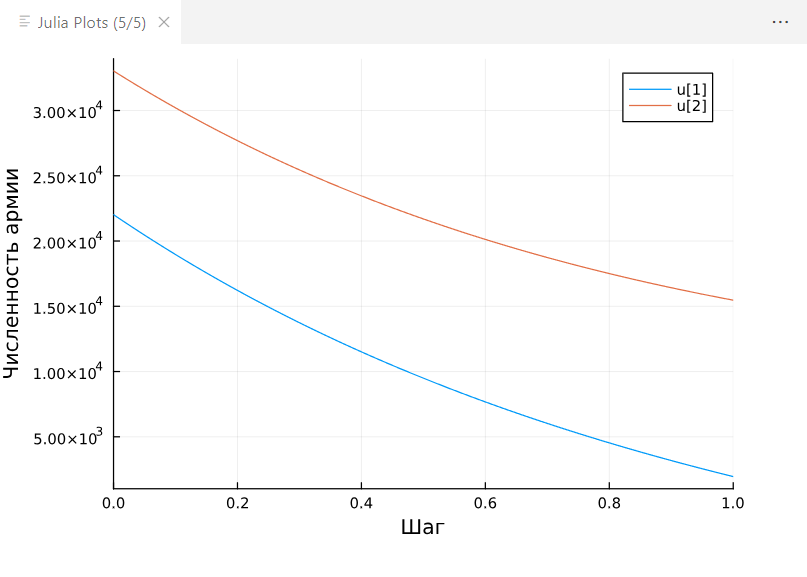
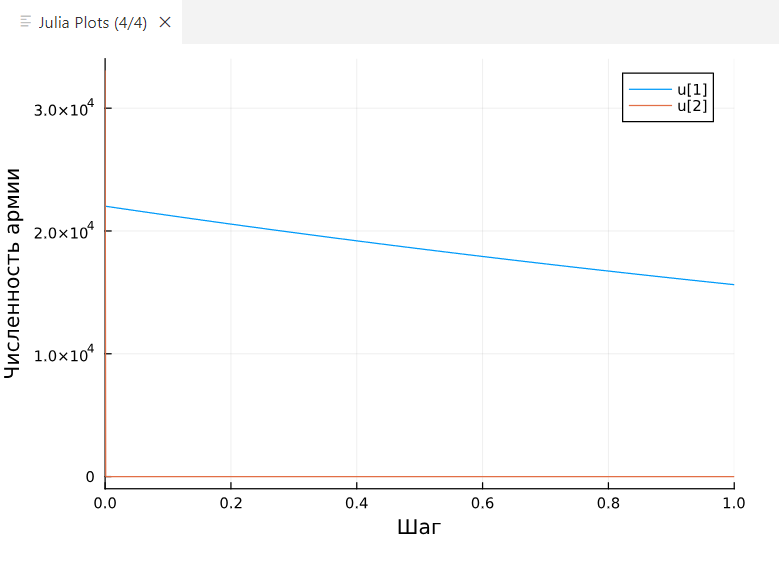

Рассмотреть некоторые простейшие модели боевых действий – модели Ланчестера. Построить графики для двух из трёх рассмотренных моделей.
Между страной Х и страной У идет война. Численность состава войск исчисляется от начала войны, и являются временными функциями x(t) и y(t). В начальный момент времени страна Х имеет армию численностью 22 022 человек, а в распоряжении страны У армия численностью в 33 033 человек. Для упрощения модели считаем, что коэффициенты a, b, c, h постоянны. Также считаем P(t) и Q(t) непрерывные функции. Постройте графики изменения численности войск армии Х и армии У для следующих случаев: 1. Модель боевых действий между регулярными войсками
$\displaystyle \frac{dx}{dt} = -0,401x(t) - 0,707y(t) + sin(8t)$ $\displaystyle \frac{dy}{dt} = -0,606x(t) - 0,502y(t) + cos(6t)$
$\displaystyle \frac{dx}{dt} = -0,343x(t) - 0,895y(t) + 2sin(2t)$ $\displaystyle \frac{dy}{dt} = -0,699x(t)y(t) - 0,433y(t) + 2cos(t)$
Используя язык julia создала код для решения данных дифференциальных уравнений и построения графика: using Plots using DifferentialEquations a, b, c, h = 0.401, 0.707, 0.606, 0.502 dt = 0.05 v0 = [22022, 33033] function P(t) sin(8t) end function Q(t) cos(6t) end
function equations(du, u, p, t) du[1] = - au[1] - bu[2] + P(t) du[2] = - cu[1] - hu[2] + Q(t) return du end
prob_sde = ODEProblem(equations, v0, (0.0, 1.0)) sol = solve(prob_sde, dt=dt) plot(sol, xlabel=“Шаг”, ylabel=“Численность армии”)
В коде поменяла входные значения и дифференциальные уравнения, чтобы код подходил для второго задания: a, b, c, h = 0.343, 0.895, 0.699, 0.433 dt = 0.05 v0 = [22022, 33033] function P(t) 2sin(2t) end function Q(t) 2*cos(t) end
function equations(du, u, p, t) du[1] = - au[1] - bu[2] + P(t) du[2] = - cu[1]u[2] - h*u[2] + Q(t) println(u) end
 
Научилась строить простейшие модели боевых действий.